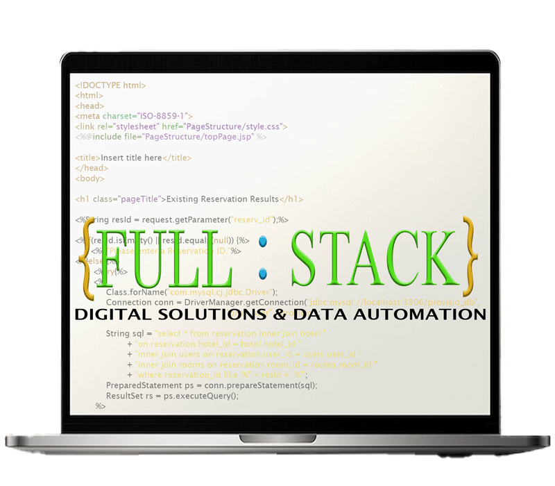

We offer a comprehensive range of services that include the following:
Whether for an individual, a small to medium enterprise (SME), a large corporation or a non-profit organization, a website should be user-friendly and possess functionality that serves the bottom line of the business or entity. In addition, the website should also reflect the feel and character of the business, individual or organization it represents. While implementing technologies and best practices to ensure that your website operates efficiently and effectively, we intentionally inject artistic design elements to make your site a one-of-one; a site that stands out from the crowd as an original and unique representation of your business.
In our effort to reach small to medium enterprises and various industries, we develop the following types of applications:
Web applications are software programs that run on web browsers and are accessed through the internet. They are typically used as software accessed by users on company devices in corporate environments, but they can also be used by individuals for personal use. Web applications are designed to provide specific functionality and can range from simple tools to complex platforms, such as social media sites, e-commerce platforms, and online productivity tools.
Standalone applications are software programs that run independently on a user's device without requiring an internet connection. They are typically installed directly on the user's computer or mobile device and can be used for a wide range of purposes, including productivity, entertainment, and utility. Standalone applications can be designed for various platforms, such as Windows, macOS, Linux, iOS, and Android, and they often provide more robust features and functionality compared to web applications due to their ability to leverage the full capabilities of the user's device.
Mobile applications, commonly known as mobile apps, are software programs designed specifically for use on mobile devices such as smartphones and tablets. They are typically downloaded and installed from app stores like the Apple App Store or Google Play Store. Mobile applications can serve a wide range of purposes, including communication, entertainment, productivity, and utility. They often leverage the unique features of mobile devices, such as touchscreens, GPS, cameras, and sensors, to provide a seamless and engaging user experience.
In addition to web, standalone and mobile applications, we also create apps that are inspired by researching problems that exist throughout businesses and society, in general, and then examining how technology, in the form of an app, can be used to bring about a solution to those problems. We are always looking for ways to use technology to make life easier, more efficient and more enjoyable for people.